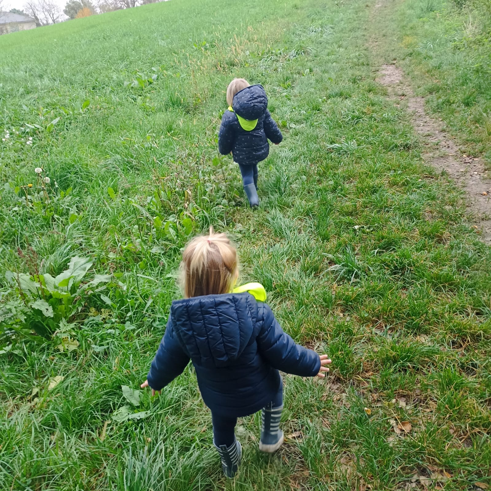
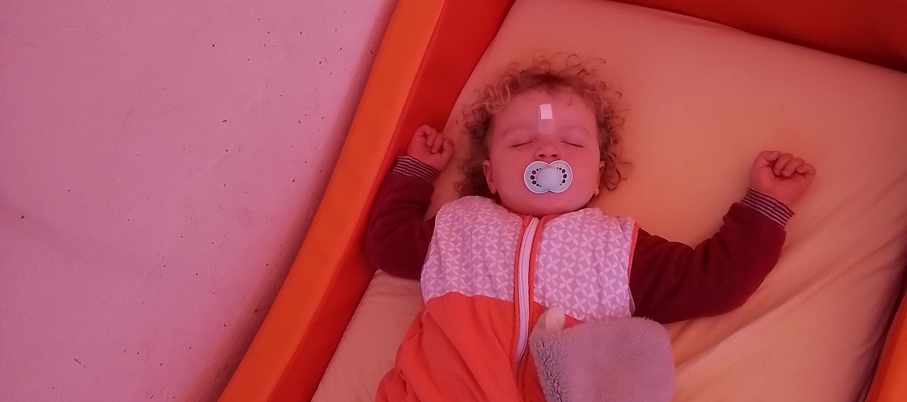
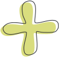
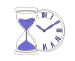

Journée type

L'accueil et l'arrivée des enfants
L'accueil est un moment de transition essentiel qui fait le pont entre la maison et la structure. Dès l'ouverture, nous accueillons chaque famille de manière individualisée. Ce temps d'échange permet de transmettre les informations nécessaires au bien-être de l'enfant, tout en respectant son rythme de séparation. C’est un moment privilégié où l’enfant prend ses marques sereinement, se sentant attendu et reconnu au sein du groupe.Les temps de jeux libres Le jeu libre est le moteur principal du développement et de l'autonomie de l'enfant. Tout au long de la matinée, des espaces aménagés (coin dînette, motricité fine, lecture, construction) sont laissés à la libre disposition des enfants. Sous le regard attentif et sécurisant des professionnels, l'enfant explore, expérimente et interagit avec ses pairs à son propre rythme.


Le temps de rassemblement
Les temps de rassemblements sont des repères et des rituels qui créent chez l'enfant un sentiment de sécurité. Vers 09h00, un temps de rassemblement est proposé et les enfants sont libres de s'asseoir ou non. Des chansons et des comptines sont proposées pour saluer chaque enfant et professionnel par son prénom. Nous avons également des temps rassemblement avant le repas pour apaiser l'excitation du matin .
activités
Ce temps est dédié à l’éveil et à la découverte, sans jamais être une obligation pour l’enfant.Vers 09h30, après le temps de rassemblement, des ateliers thématiques sont installés par les professionnels : manipulation (semoule, eau, pâte à modeler), peinture, parcours moteur ou encore éveil sensoriel. Le libre choix : L'enfant est invité à participer selon ses envies et ses besoins du moment. S'il préfère poursuivre ses expérimentations de façon autonome, son choix est respecté. Le plaisir de faire : Nous privilégions le processus et l'exploration plutôt que le résultat final. L'objectif est de permettre à l'enfant de développer sa motricité et sa curiosité dans un cadre ludique et sans pression. Ces ateliers se déroulent en petits groupes pour garantir une ambiance calme et une présence de qualité de la part de l'adulte, qui accompagne l'enfant dans ses réussites comme dans ses hésitations.


Le temps repas
Pour les bébés,les repas sont pris à la demande en fonction du rythme de chaque enfant. Les biberons sont donnés dans les bras pour assurer la sécurité affective des enfants. Les enfants qui débutent la diversification alimentaire sont placés dans un transat ou dans les bras de l'adulte, en fonction de leurs habitudes à la maison et de leur tonicité musculaire. Pour les plus grands,des repas collectifs sont proposés. Les repas sont présentés dans desassiettes compartimentées,et tous les aliments sont servis en même temps. De cette manière, l'enfant est maître de son repas et décide dans quel ordre il veut manger les aliments. Il peut mélanger et ainsi faire de nouvelles expériences gustatives. Il est autorisé d'expérimenter mais nous les sensibilisons sur le fait que la nourriture n'est pas un jeu.
Soin et moment cocooning
Avant les siestes, un moment calme est proposé afin de préparer les enfants au repos. Pendant ces moments, les soins d'hygiène sont effectués. Les soins d'hygiène ont pour objectif de placer l'enfant dans un confort physique et psychique. Ils ont lieu dans des prises en charge individuelles afin de respecter l'intimité de chacun mais aussi de privilégier les échanges avec l'adulte à ce moment là. Les changes sont également effectués tous au long de la journée en fonction des besoins, ou par défaut toutes les 3h.


La Sieste
Les rôles des professionnels au moment de lasiesteest d'être attentif à chaque enfant, de prendre en compte leurs besoins afin de pouvoir les accompagner à trouver le sommeil seul et sereinement. Pour les bébés, les siestes ont lieu sur demande, tout au long de la journée en fonction du rythme de l'enfant mais surtout des signes de fatigue. Pourles plus grands,les siestes sont davantage encadrées et ont lieu entre 12h00 et 14h00. Cependant, nous respectons le rythme de l'enfant : par exemple, si un enfant a besoin de dormir jusqu'à 15h, nous le laissons dormir.
La sortie dehors
Le temps du goûter : une fois que les enfants se sont réveillés à leur rythme, nous nous retrouvons autour de la table. Comme pour le repas du midi, ce moment est l'occasion de favoriser l'autonomie (boire au verre, choisir son fruit) et de privilégier les échanges verbaux dans une atmosphère calme et détendue. La transition par le jeu : une fois le goûter terminé, les enfants retournent naturellement vers les jeux libres. C'est un temps de transition douce où l'enfant retrouve ses repères dans l'espace de vie.


Le départ des enfants
Nous accompagnons l'enfant dans la fin de son activité pour préparer son retour en famille. Ce moment est l'occasion d'un échange de qualité entre les professionnels et les parents : Les transmissions : Nous partageons avec vous les moments forts de la journée de votre enfant (activités appréciées, progrès, interactions sociales) ainsi que les informations physiologiques (sommeil, repas). La valorisation : C'est un temps où l'on valorise les expériences vécues par l'enfant, lui permettant de faire le lien entre ses deux lieux de vie.